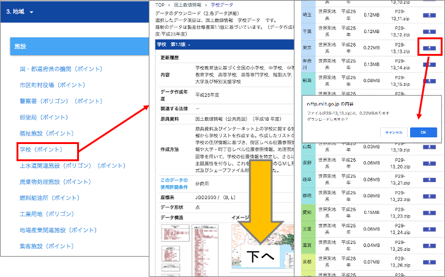
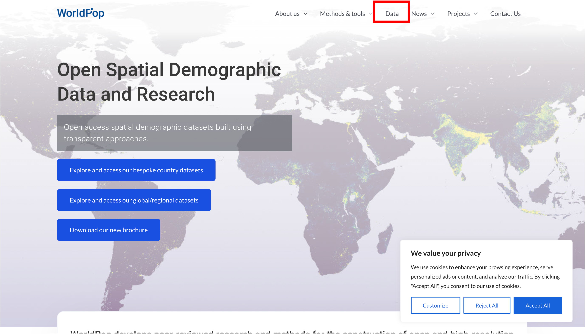
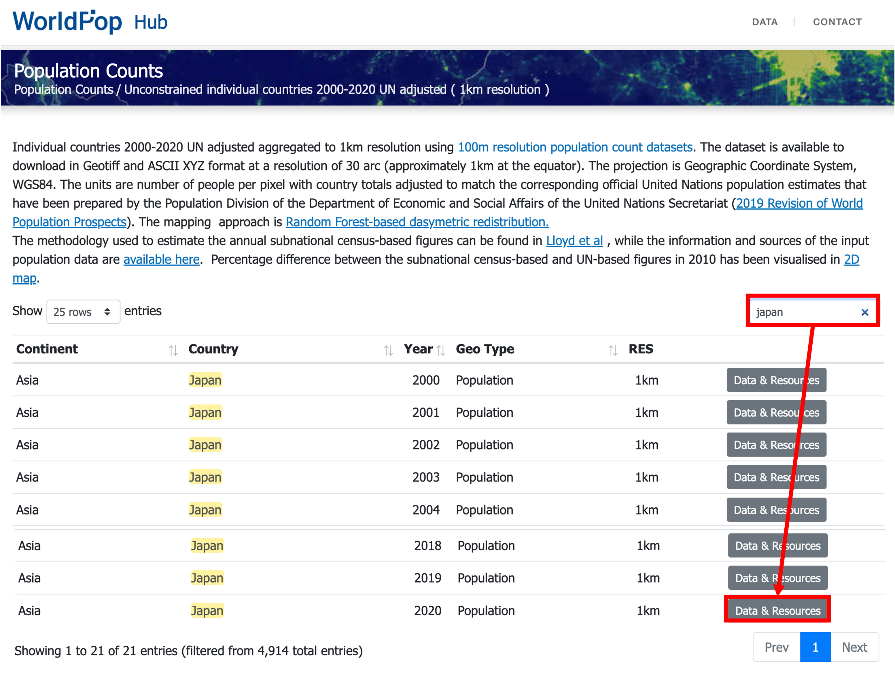
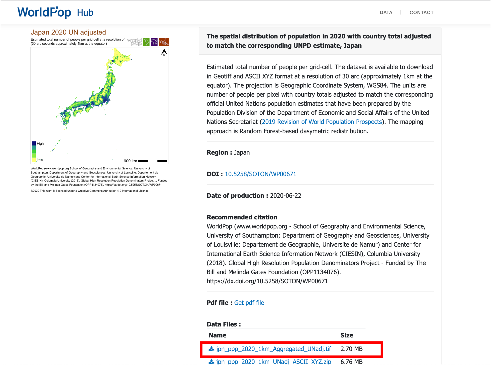
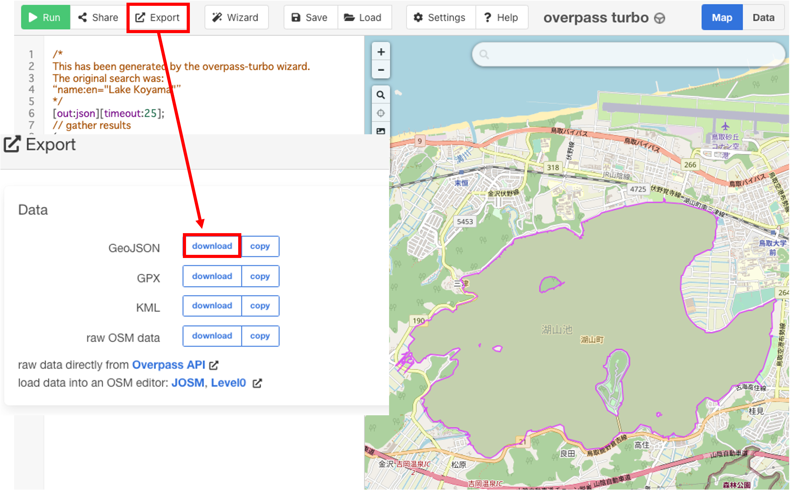
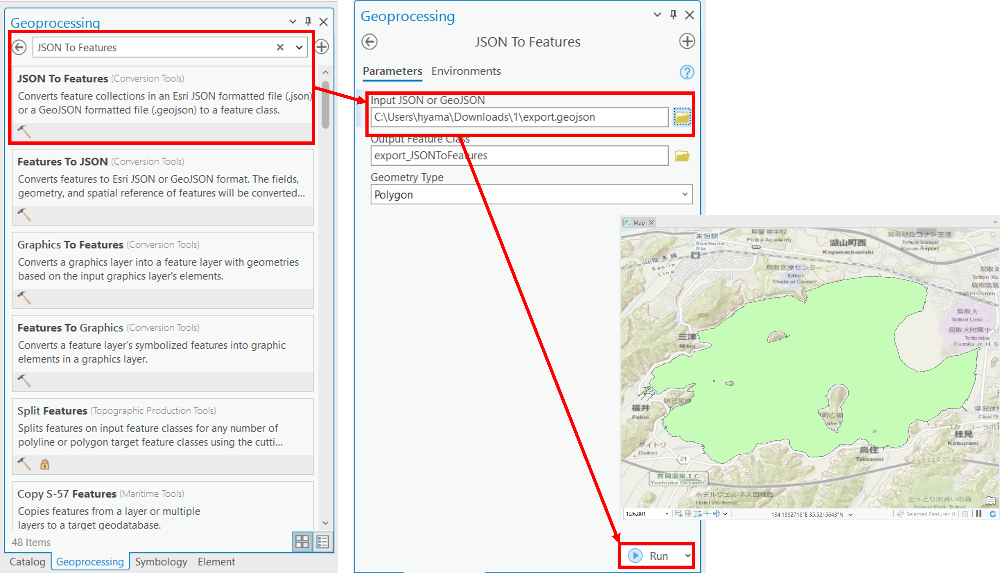

GISデータの取得
このページでは、様々な機関のWebサイトで公開されているGISデータを取得する手法を解説します。国内の機関のデータの入手方法は、GIS実習オープン教材で解説されています。この実習では、以下の3機関から、ダウンロードしたそれれぞのデータを用いて、GISで3枚の地図（方位、凡例、縮尺をつけること）を作成した後、課題を作成してください。
Menu
- 国土数値情報
- World population
- OpenStreetMap
- Option: EarthExplorer
国土交通省の国土数値情報
国土数値情報は、国土交通省が整備しているGISデータであり、国土計画の策定や推進のために提供されている。以下では、国土数値情報のサイトから、データをダウンロードする手法について解説する。以下では、3.地域＞学校（ポイント）から、東京都の学校のデータをダウンロードする方法を紹介する。
国土数値情報のサイトにアクセスする。
国土数値情報をダウンロードをクリックする。
右側の画面を下にスクロールし、
3.地域の学校（ポイント）をクリックする。次に表示される画面のデータの解説を読みすすめ、下にすすむ。都道府県の一覧が表示されているため、今回は東京都のデータをダウンロードする。ダウンロードしたファイルは、.zipを解答した後、利用できます。 
World population
WorldPopにアクセスする。Dataを選択する。

Population Counts > Unconstrained individual countries 2000-2020 UN adjusted (1km resolution) の順で選択していく。

今回は、日本のデータを入手するため、Japanをsearch boxから検索する。次に、2020年のData & Resources を選択する。

jpn_ppp_2020_1km_Aggregated_UNadj.tifをダウンロードする。

ダウンロードしたデータArcGIS Proに読み込み、シンボルを整える。


OpenStreetMap
OpenStreetMap(OSM)は、無償で閲覧できるオンライン地図である。地理情報はユーザーが登録でき、データはCommons Open Database License (ODbL) by the OpenStreetMap Foundation (OSMF)として利用できる。OSMを利用する場合, クレジットを表記する必要がある。詳細は参照先に記載されている。
https://wiki.openstreetmap.org/wiki/About_OpenStreetMap https://www.openstreetmap.org/copyright
OpenStreetMapでのデータ閲覧
[OpenStreetMap]には、①住所検索、 ②地理情報のエクスポート機能、③背景地図を追加や地物の詳細を確認する機能などがある。

今回は、鳥取県の湖山池のポリゴンをエクスポートする。Koyama Lake (by clicking here)を表示する。Query featuresを選択し、地図上の湖山池をクリックする。ここでは、name:en="Lake Koyama"のタグを使用する。


http://overpass-turbo.eu/にアクセスし、右側の地図を湖山池に移動する。 Wizardをクリックし、name:en="Lake Koyama"を入力する。build and run queryを実行する。

Exportを選択し、GeoJSON formatから、データをダウンロードする。

ArcGIS Proを立ち上げ、View > Geoprocessing > JSON to Featuresを選択し、ダウンドードしたデータを指定してRunをクリックする。

Note: This Lake Koyama polygon is necessary for the next section.
時間のある人：EarthExplorer
EarthExplorerは、衛星画像やDEM(Digital Elevation Model)が、入手できます。 このサイトは, USGS（United States Geological Survey）が運用しています。
EarthExplorer にアクセスして、Loginから アカウントを作成する。アカウントを作成しないとデータがダウンロードできないが、その直前までは体験できる。

今回は東京周辺の標高データ（DEM）を対象とするため、地図を東京に移動する。

Search Criteria のタブを選択し、 Use Mapをクリックする。

Data SetsタブでSRTMを検索し、SRTM 1 Arc-Second Globalを選択する。

青枠のボタンをクリックするとデータの範囲が地図上で表示される。必要なデータの範囲を確認後、GeoTIFFを赤枠のボタンからダウンロードする。

課題
Downloading GIS data
2機関以上のGISデータを用いて、下記のような地図を作成して提出してください。
完成例